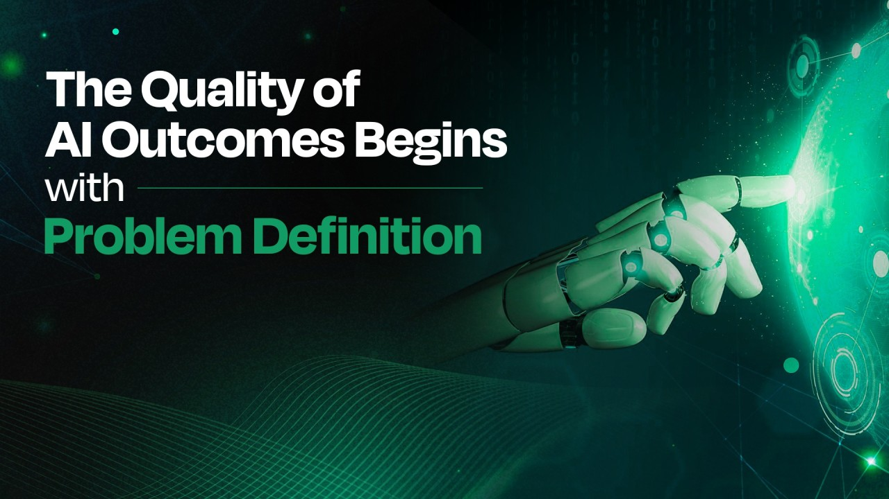
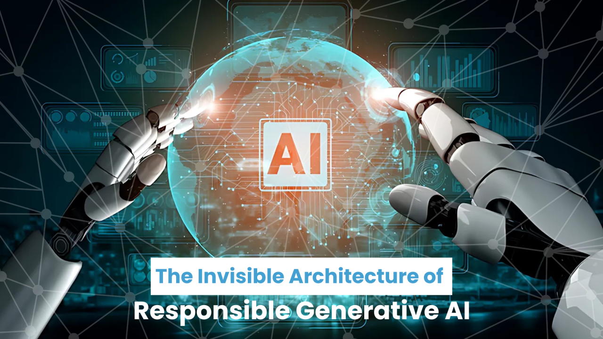
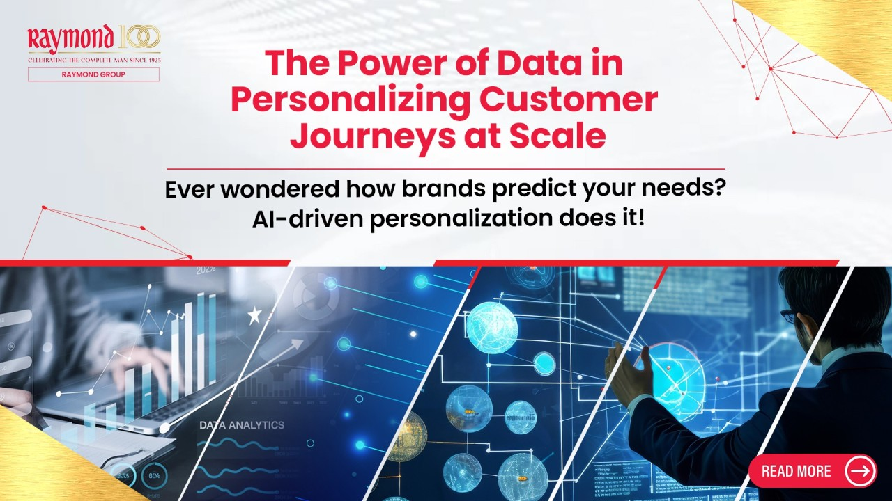

The Quality of AI Outcomes Begins with Problem Definition
The rapid enterprise adoption of Artificial Intelligence has shifted the bottleneck in decision-making.
Read MoreDr. Biswajit Rath shares ideas, frameworks, and experiences that help organizations navigate the evolving landscape of AI, innovation, and digital transformation.
Explore Insights
The rapid enterprise adoption of Artificial Intelligence has shifted the bottleneck in decision-making.
Read More
Generative AI has moved beyond proof-of-concept. Today, it’s influencing product design, accelerating time to market, and augmenting decision-making ...
Read MoreAs industries pivot toward hyper-digitization, manufacturing, long characterized by mechanical repetition and linear process flows is undergoing a radical metamorphosis ...
Read MoreIn most organizations, the issue isn’t a lack of technology or ambition. It’s something less visible but more consequential ...
Read More
Personalization isn’t just a differentiator today, it’s an expectation. Customers engage with brands across multiple touchpoints ...
Read More